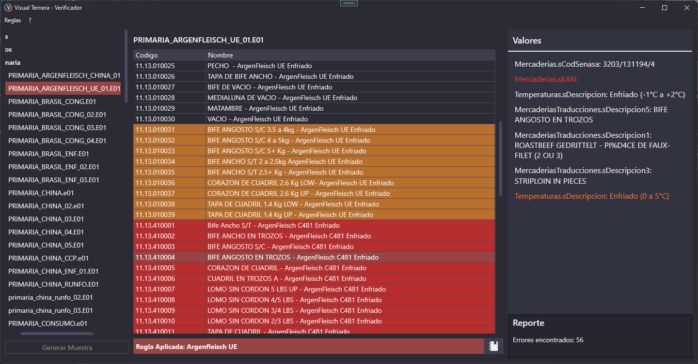
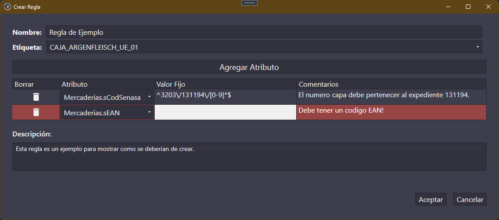

El propósito de esta función es asegurarnos que los datos utilizados en las etiquetas estén cargados y sean correctos.

En este ejemplo podemos ver que la lista de productos para una etiqueta, tiene un par de items resaltados con colores. Estos colores significan que:
- Algún atributo del producto esta mal cargado.
- Algún atributo del producto no esta cargado.
Para poder hacer este análisis se implemento un sistema de reglas. Se crea una regla con los atributos a considerar y que valores debería contener. Luego se aplica esa regla a una o mas etiquetas.
Los valores de los productos son obtenidos a traves del modulo backend implementado, Visual Ternera ofrece una implementación para PiQuatro de Twins Informática. Para realizar cambios en este modulo ver [3.X. INSERTAR LINK AL MODULO DE TWINS].
Para poder crear una regla tenemos que ir al menu Reglas -> Crear Regla. En esta ventana indicamos el nombre, etiqueta, descripción (opcional) y que atributos se deben analizar.

Para cada atributo hay que especificar la variable a analizar, y en caso que el valor deba respetar alguna norma se puede definir un valor fijo que puede ser una constante o una cadena regex.
En caso que se quiera aplicar esta regla a otra etiqueta, abajo de la lista de productos se encuentra la siguiente barra, donde podemos ver que regla esta actualmente aplicada para esta etiqueta. Podemos cambiar (o remover) la regla aplicada haciendo click en el librito a la derecha.
Para poder modificar una regla se debe acceder al menu Reglas -> Modificar Regla. Seleccionamos la regla a modificar y ahi podemos cambiar los atributos o la descripción.
Una vez los productos de una etiqueta estén libres de errores, Visual Ternera te ofrecerá la posibilidad de generar una muestra (ver 3.2.4.1. Generar Muestra).
{kind=link}
{kind=link}
{kind=link}
{kind=link}